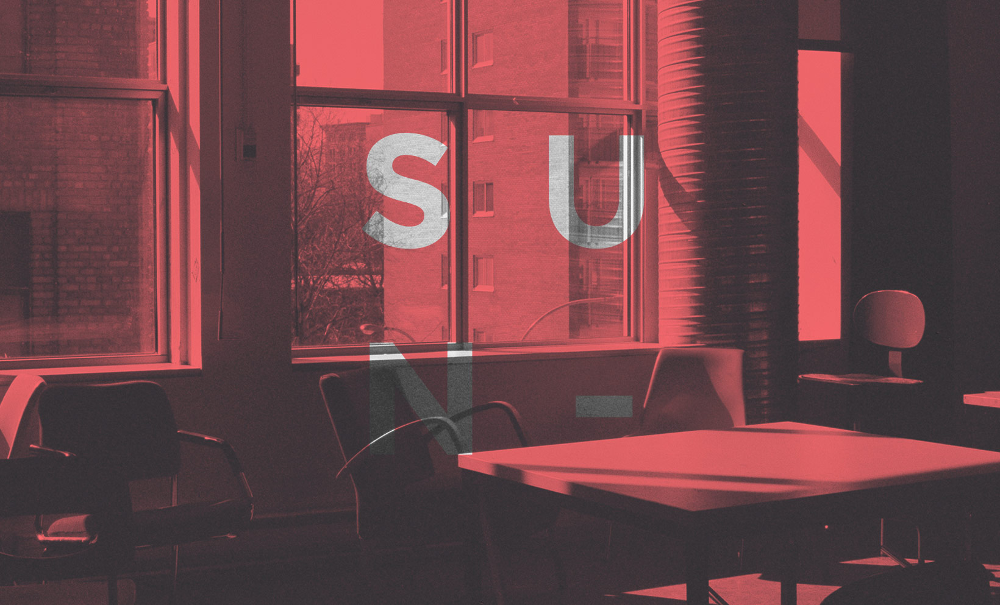

Introspection by samemess
A year of work materialized on an album.
A year of work materialized on an album.
When we get asked how we feel, we usually answer fastly with the first positive word that comes out of our minds. Knowing what we actually are inside, though, requires a tough and large process which has been carried out on the making of this record.
As you may (or not) know, the "Underground Gain" EP has preceded this full-length album. If you've known me for a while, you'll know what UG really is for me: a perception of myself as an object that keeps growing inside of a box. Introspection, the next step on my evolution, is the destruction of that box and also my liberation both as person and artist.
- 1 · Retrospection
- 2 · Track 02
- 3 · Track 03
- 4 · Track 04
- 5 · Track 05
- 6 · Track 06
- 7 · Track 07
- 8 · Track 08
- 9 · Track 09
- 10 · INTROSP1R4T1ON